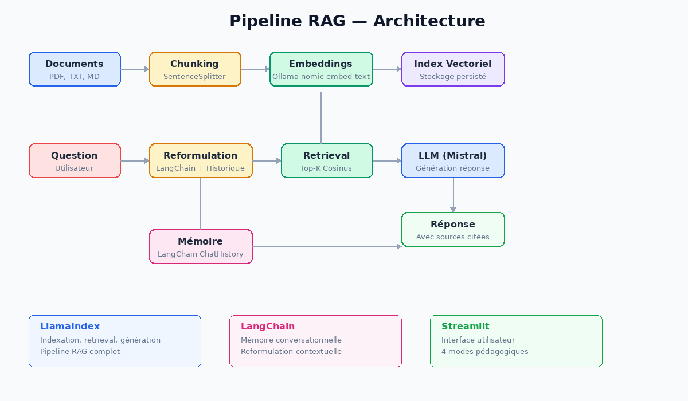
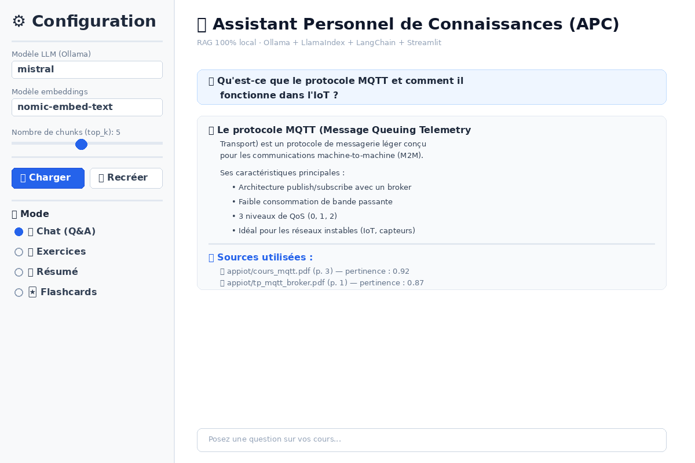

APC — Assistant Personnel de Connaissances
Chatbot documentaire 100% local pour étudiants. Vectorise vos cours (PDF, TXT, MD) et permet de les interroger, générer des exercices, des résumés et des flashcards grâce à un pipeline RAG (Retrieval-Augmented Generation).
Technologies
Objectifs
- Créer un assistant pédagogique qui fonctionne entièrement en local (aucune donnée envoyée sur le cloud)
- Indexer et vectoriser automatiquement les cours au format PDF, TXT et Markdown
- Proposer 4 modes d'interaction : chat Q&A, génération d'exercices, résumés et flashcards
- Maintenir un contexte conversationnel grâce à la mémoire LangChain
🏗️ Architecture du Pipeline RAG
Le système repose sur deux frameworks complémentaires : LlamaIndex gère le pipeline RAG complet (ingestion, chunking, vectorisation, retrieval et génération) tandis que LangChain apporte la mémoire conversationnelle et la reformulation contextuelle des questions. Le tout est orchestré via une interface Streamlit.

Pipeline RAG — Vue d'ensemble
Les documents sont chargés, découpés en chunks de 1024 tokens (avec 200 tokens de
chevauchement), puis vectorisés via Ollama (nomic-embed-text). À chaque question,
LangChain reformule la requête en tenant compte de l'historique, LlamaIndex récupère les chunks
les plus pertinents par similarité cosinus, puis le LLM (Mistral) génère une
réponse sourcée.
💻 Interface Utilisateur

Interface Streamlit — Mode Chat
L'interface propose une barre latérale de configuration (choix du modèle, nombre de chunks,
gestion de l'index) et un sélecteur de mode (Chat, Exercices, Résumé, Flashcards). Les réponses
incluent systématiquement les sources utilisées avec leur score de pertinence.
🎯 Les 4 modes pédagogiques
Questions-réponses sur vos cours avec citation des sources
Génération d'exercices variés avec corrections détaillées
Résumé structuré d'un cours ou d'un chapitre complet
Cartes de révision recto/verso pour mémoriser efficacement
🔧 Détails techniques
Ingestion des documents : Les fichiers (PDF, TXT, MD) sont chargés via le
SimpleDirectoryReader de LlamaIndex avec scan récursif des sous-dossiers. Le découpage
utilise un SentenceSplitter pour respecter les frontières de phrases.
Vectorisation : Chaque chunk est vectorisé via le modèle
nomic-embed-text d'Ollama. L'index est persisté sur disque pour éviter de
re-vectoriser à chaque lancement.
Mémoire conversationnelle : LangChain maintient l'historique des échanges via un
ChatMessageHistory. Avant chaque requête, la question est reformulée en intégrant le
contexte pour être autonome (important pour un retrieval pertinent).
Configuration flexible : Tous les paramètres (modèle LLM, modèle d'embedding, chunk size, top-k) sont configurables via des variables d'environnement ou directement dans l'interface Streamlit.
📂 Structure du projet
Longchai_illama/ ├── app.py # Point d'entrée Streamlit ├── requirements.txt # Dépendances Python ├── src/ │ ├── config.py # Configuration centralisée │ ├── prompts.py # Prompts système (chat, exercices, résumé, flashcards) │ ├── indexer.py # Chargement, découpage et vectorisation │ └── chatbot.py # Chatbot RAG avec mémoire et modes ├── scripts/ │ ├── test_ollama.py # Diagnostic Ollama │ └── rebuild_index.py # Reconstruction de l'index (CLI) ├── mes_documents/ # Cours organisés par matière └── storage/ # Index vectoriel persisté
💡 Retours d'expérience
Ce projet m'a permis d'approfondir ma compréhension des systèmes RAG et de l'articulation entre plusieurs frameworks (LlamaIndex pour le pipeline de données, LangChain pour la mémoire). Le choix du 100% local avec Ollama garantit la confidentialité totale des documents de cours.
Défis rencontrés :
- Qualité du retrieval : Le réglage du chunk size et du top-k impacte fortement la pertinence des réponses. Trop petit = contexte insuffisant, trop grand = bruit.
- Reformulation : Sans reformulation contextuelle, les questions de suivi ("Et pour le QoS ?") ne retrouvent pas les bons chunks. La couche LangChain résout ce problème.
- Performance et Matériel : Faire tourner un LLM 100% en local est très exigeant. Ce projet a été testé avec une carte graphique GTX 1060, ce qui nécessitait parfois plusieurs minutes pour générer une réponse. Pour une expérience optimale en local, un PC plus puissant est nécessaire, ou l'utilisation de modèles plus légers (ex: Llama 3.2). Une alternative consiste à utiliser une API Cloud (comme Gemini 2.5 Flash) pour des réponses instantanées et de meilleure qualité, mais on perd alors l'avantage principal du projet : la confidentialité totale des données.
📦 Code source
Le code complet de ce projet est disponible sur demande. N'hésitez pas à me contacter pour une démonstration en live.